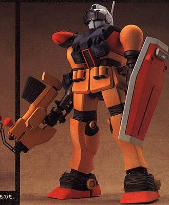

| RGM-79M GM Diver Limited Production Marine Warfare Earth Federation Mobile Suit |
|
|  | |
General and Technical Data |
|
|
Model number: RGM-79M Code name: GM Diver Unit type: Underwater Point Defence Suit Operator: Earth Federation Dimensions: head height 18.0 meters; overall height 18.5 meters Weight: empty 38.2 metric tons; max gross 51.3 metric tons Construction: Titanium alloy Powerplant: Minovski type ultracompact fusion reactor, output rated at 1250 kW Propulsion: hydrojet thrusters, 2x 12000 kg, 4x 2500 kg Performance: maximum water speed 40 knots; maximum ground running speed 109 km/h Equipment and design features: sensors, range 6000 meters Fixed armaments: 2x 60mm vulcan gun, mounted in head. Optional fixed armaments: Anti-ship Torpedo, can be mounted on external rack on either shoulder. Optional fixed armaments: 90mm waterproofed GM machinegun, 20 rounds per clip; Water-use grenades, can be timed to fire ink cartridges or explosive charges; Handheld anti-MS Torpedo launcher, 4 rounds per clip + 1 in chamber; tower shield. Magnetic Storage Racks: 3, primary rack on backpack, one additional rack on either hip. |
|
| Technical and Historical Notes | |
|
Upon development of the Duchy of Zeon's Jukon submarine and Gogg Marine Mobile Suit, the Federation was at somewhat of a loss in the naval campaign. The Jukon was easily able to sneak up to Federal battlegroups undetected, and the Gogg could tear a battleship in two with its hands.
The solution, in the eyes of Federal design specialists, was somewhat of a hurried one. Taking the frame of a then prototype RGM-79 GM, they proceeded to give it major surgury, completely replacing the head and backpack, and taking all the armor off of its arms. The backpack was exchanged with a similar one mounting hydrojet thrusters (similar thrusters were put into the feet) and the head mounted with something that looked oddly like a scuba-mask. The resulting GM Diver, as it was affectionately named, was only slightly better than the Zeons failure MSM-01. While the lighter frame of the GM was aquatically sound (after removing the afformentioned armor plating), the hurried replacement of the thrusters, very non-hydrodynamic shape, and complete lack of underwater armament, made it almost useless once it got there. To supplement this the prototype unit was sent back to the lab and the arms refitted again, the shoulders reshaped and made to arm an anti-ship torpedo apiece, for use against the Jukon submarine. An armor-piercing torpedo gun was also commissioned for the unit specifically with the Gogg in mind. Finally, a waterproofed version of the standard 90mm GM machinegun was added to its list of armaments, along with a set of underwater use "grenades", which really work more like Depth charges.
After a few test runs and the refitting of Himilaya class carriers to arm the units, the Federation had its answer to the duchy, albeit a hurried one.
|
 RPG quick stats sheet
RPG quick stats sheet | Weapons and Features | |


 |
|